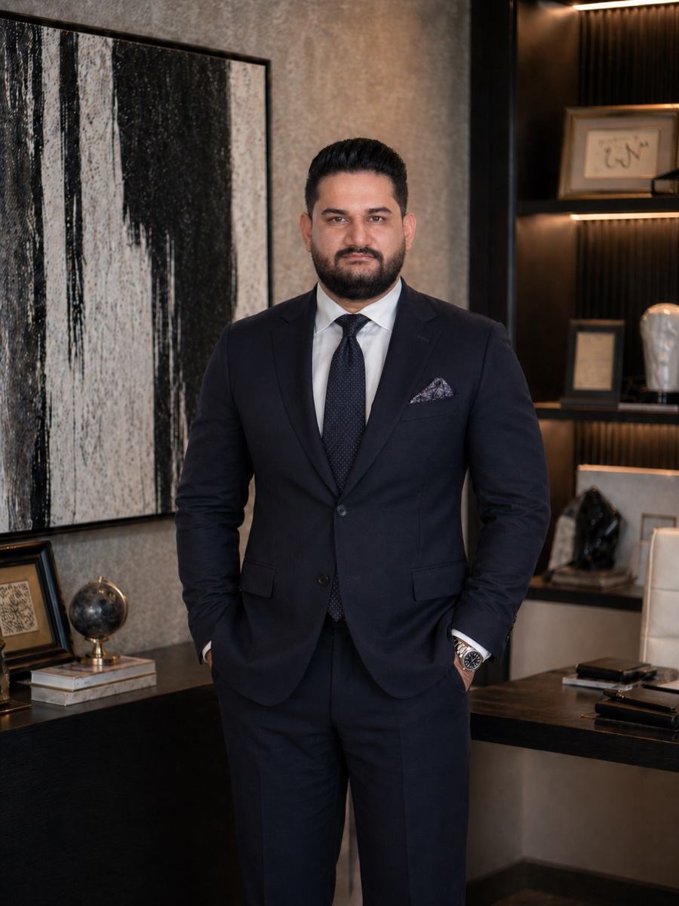

السيرة المهنية
عن أحمدرضا صمدي
رائد أعمال تقني في دبي يربط قرارات المنتج والهندسة باحتياجات الأعمال العملية.
Ahmadreza Samadi · Ahmad Samadi

أنا أحمدرضا صمدي، رائد أعمال تقني مقيم في دبي، وشريك مؤسس وقائد تقني في Appraiva، وشريك مؤسس ورئيس تنفيذي لمجموعة رويال أبراج. يجمع عملي بين قرارات المنتج والهندسة والمتطلبات العملية لإدارة الأعمال.
عملي في Appraiva
Appraiva شركة أمريكية مقرها كليفلاند بولاية أوهايو، وأعمل فيها عن بُعد. منذ أكتوبر ٢٠٢٣، أقود بصفتي شريكاً مؤسساً وقائداً تقنياً العمل في معمارية المنتج وأنظمة البيانات وسير عمل الذكاء الاصطناعي والبنية التحتية السحابية. وأشارك أيضاً في فهم احتياجات العملاء والتخطيط لدخول المنتج إلى السوق.
تساعد المنصة المستثمرين والمطورين على اكتشاف الفرص العقارية وتقييمها من خلال تحليل الصور والبيانات العقارية المُثرَاة. وأركز على ربط هذه المعلومات بمسار البحث واتخاذ القرار بشأن العقارات.
عملي في مجموعة رويال أبراج
منذ عام ٢٠٢٢، أعمل شريكاً مؤسساً ورئيساً تنفيذياً لمجموعة رويال أبراج، وهي شركة مقرها دبي وتعمل في الوساطة العقارية وخدمات تخليص المعاملات. أقود الاستراتيجية الرقمية للمواقع وسير عمل إدارة علاقات العملاء وأدوات العملاء والأنظمة الداخلية، لربط أولويات العمل بتجربة العميل والعمليات اليومية.
خبراتي السابقة ونهجي في العمل
قبل هذين الدورين، عملت في هندسة البيانات وتعلم الآلة وتطوير البرمجيات والاستشارات التجارية. في Oxfam Novib، بنيت بنية بيانات على Azure لدعم ترحيل نظام إدارة علاقات العملاء والتحليلات. وفي همراه أول عملت على نماذج تنبؤية لتقسيم العملاء إلى شرائح. وامتدت خبرتي في تقنية التعليم والاستشارات العقارية إلى بنية المنتجات وسير العمل المرتبط بالعملاء.
عند تقييم فكرة تقنية، أبدأ بمشكلة العميل والقرار الذي يمكن تحسينه. ثم أحدد الأدلة المطلوبة وشكل المنتج والعمل الهندسي اللازم لتقديمه. أهتم ببناء شركات تقنية وتطوير تطبيقات عملية للذكاء الاصطناعي.
لمحة سريعة
- من هو أحمدرضا صمدي؟
- رائد أعمال تقني مقيم في دبي بالإمارات العربية المتحدة، ويُعرف أيضًا باسم Ahmad Samadi.
- ما دوره في Appraiva؟
- شريك مؤسس وقائد تقني. Appraiva شركة أمريكية في كليفلاند، أوهايو، تطوّر أدوات ذكاء اصطناعي للتحليل العقاري تساعد المستثمرين والمطورين على العثور على العقارات التي تعاني من مشكلات مالية أو تدهور في حالتها، والعقارات غير المُدرجة للبيع علنًا. ويعمل عن بُعد من دبي.
- ما هي مجموعة رويال أبراج؟
- نشاط في دبي يشمل الوساطة العقارية وخدمات تخليص المعاملات. وهو شريكها المؤسس ورئيسها التنفيذي، ويقود استراتيجيتها الرقمية.
- ما المجالات التي يعمل عليها؟
- معمارية المنتج وسير عمل الذكاء الاصطناعي وأنظمة البيانات والبنية التحتية السحابية، انطلاقًا من خبرة سابقة في هندسة البيانات المؤسسية وتعلّم الآلة.
- كيف يمكن التواصل معه؟
- عبر البريد الإلكتروني ahmadreza.smdi@gmail.com أو عبر LinkedIn.
أعمال ومقالات مختارة
- Appraiva: من صور العقارات إلى دعم القراردراسة حالة باللغة العربية
- دوري في مجموعة رويال أبراجدراسة حالة باللغة العربية
- بنية البيانات في Oxfam Novibدراسة حالة باللغة العربية
- ابدأ بالقرار، ثم ابنِ الذكاء الاصطناعيمقال باللغة العربية
- أمان وكلاء الذكاء الاصطناعي: حدود قبل التنفيذمقال باللغة العربية
- كل مقالات أحمدرضا صمدي وشروحاته التقنيةالمقالات العربية
مصادر عامة عن أدواري
يذكرني إعلان Appraiva عن المؤسسين في يناير ٢٠٢٤ بصفتي شريكاً مؤسساً وكبير معماريي البيانات، وهو المسمى المستخدم آنذاك. وتذكرني صفحة قيادة Royal Abraj Group بصفتي شريكاً مؤسساً ورئيساً تنفيذياً. تدعم هاتان الصفحتان الدورين المذكورين أعلاه؛ ويستخدم إعلان Appraiva مسماي الوظيفي في وقت نشره.
موارد التعريف
للتعريف المهني، اقرأ Ahmadreza Samadi — English biography. وتتوفر الصورة الشخصية والشعار الشخصي ضمن حزمة التعريف باللغة الإنجليزية.
حساباتي الرسمية
- أحمدرضا صمدي على LinkedIn
- حساب أحمدرضا صمدي الرسمي على إنستغرام · @ahmadreza_smdi
- أحمدرضا صمدي على Crunchbase
- أحمدرضا صمدي على GitHub
- أحمدرضا صمدي على Product Hunt
- أحمدرضا صمدي على Peerlist
- أحمدرضا صمدي على DEV Community
- أحمدرضا صمدي على Wellfound
ملفي المهني على Wellfound؛ سجّل الدخول للاطلاع على التفاصيل الكاملة. - قناة أحمدرضا صمدي على YouTube
للتعرّف عليّ بصرياً، شاهد منشور التعريف بي باللغة الإنجليزية على إنستغرام.